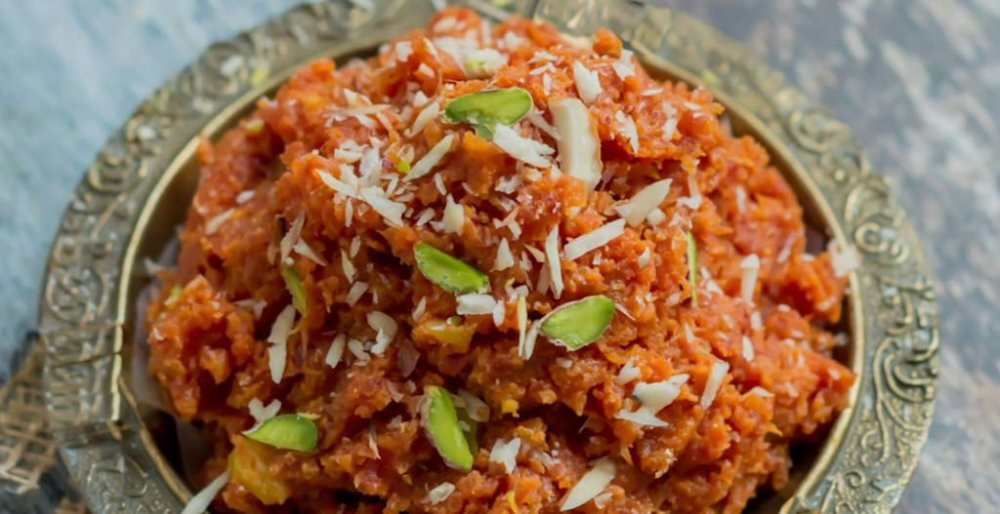

Training & Production
Women-led units: training in prep, hygiene, packaging. Homestyle snacks from trusted recipes.
Quality, care, community.
Healthy snacks at accessible prices. Livelihoods for women through food and skill.
Great food and meaningful livelihoods, together.

Training in food prep, quality, and packaging.

Nutritious snacks to offices, kiosks, retail & online.

Traditional expertise, modern distribution—women earn and lead.
A globally loved snack brand that empowers women and brings healthy snacks to everyone.

Kitchens across India hold generations of skill and care. Amma Made turns that expertise into opportunity—women-led units, training, and market access. Every snack carries the care and ambition of the women who make it.
Passionate about social impact, Sanjana has trained over 4,500 rural women across the country through several NGOs. Many of those women are now independent and confident entrepreneurs. Amma Made is built on that same belief—turning skill and care into opportunity.
Women-led units: training in prep, hygiene, packaging. Homestyle snacks from trusted recipes.

Offices, kiosks, retail, online.

Jobs in sales, distribution, and operations—value chain that supports communities.
Trusted food brand. Healthy snacks. Livelihoods for women.
100% vegetarian. Homestyle warmth in every snack.

Women-led units and inclusive jobs across the food chain. We aim to:
with sustainable income
traditional food knowledge
meaningful work in communities
a responsible and inclusive food brand
4,500+ rural women trained through partner NGOs .
The UN Sustainable Development Goals are 17 global goals set by the United Nations to achieve a better, more sustainable future for all. We contribute to these goals:
Achieve gender equality and empower all women and girls. Amma Made supports this by building women-led production units, providing training, and creating livelihood opportunities so women can earn, lead, and grow.
Promote sustained, inclusive economic growth and productive employment for all. Through training, production units, and jobs in sales and distribution, Amma Made creates decent work in the food value chain.
Reduce inequality within and among countries. Amma Made empowers rural and underserved women by bringing their skills into the formal economy and connecting them to markets.
Ensure sustainable consumption and production patterns. Amma Made focuses on quality ingredients, local production, honest food, and building a responsible brand that values people and planet.
We partner with offices, retail, malls, and institutions. Great food and women-led production—together.
Get in Touch